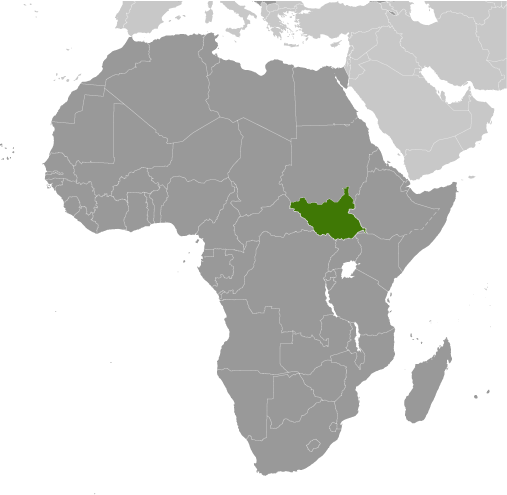
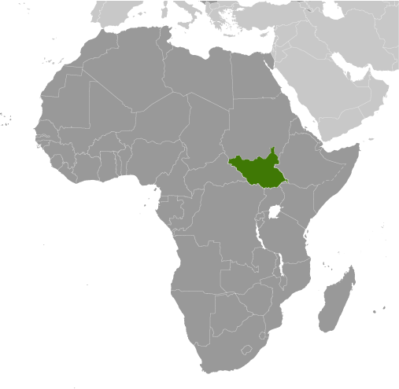

Africa :: SOUTH SUDAN
Introduction :: SOUTH SUDAN
-
Egypt attempted to colonize the region of southern Sudan by establishing the province of Equatoria in the 1870s. Islamic Mahdist revolutionaries overran the region in 1885, but in 1898 a British force was able to overthrow the Mahdist regime. An Anglo-Egyptian Sudan was established the following year with Equatoria being the southernmost of its eight provinces. The isolated region was largely left to itself over the following decades, but Christian missionaries converted much of the population and facilitated the spread of English. When Sudan gained its independence in 1956, it was with the understanding that the southerners would be able to participate fully in the political system. When the Arab Khartoum government reneged on its promises, a mutiny began that led to two prolonged periods of conflict (1955-1972 and 1983-2005) in which perhaps 2.5 million people died - mostly civilians - due to starvation and drought. Ongoing peace talks finally resulted in a Comprehensive Peace Agreement, signed in January 2005. As part of this agreement, the south was granted a six-year period of autonomy to be followed by a referendum on final status. The result of this referendum, held in January 2011, was a vote of 98% in favor of secession.Since independence on 9 July 2011, South Sudan has struggled with good governance and nation building and has attempted to control rebel militia groups operating in its territory. Economic conditions have deteriorated since January 2012 when the government decided to shut down oil production following bilateral disagreements with Sudan. In December 2013, conflict between government and opposition forces led to a humanitarian crisis with millions of South Sudanese displaced and food insecure. The warring parties signed a peace agreement in August 2015 that created a transitional government of national unity in April 2016. However, in July 2016, fighting broke out between the two principal signatories plunging the country back into conflict.
Geography :: SOUTH SUDAN
-
East-Central Africa; south of Sudan, north of Uganda and Kenya, west of Ethiopia8 00 N, 30 00 EAfricatotal: 644,329 sq kmland: NAwater: NAcountry comparison to the world: 43more than four times the size of Georgia; slightly smaller than Texastotal: 6,018 kmborder countries (6): Central African Republic 1,055 km, Democratic Republic of the Congo 714 km, Ethiopia 1,299 km, Kenya 317 km, Sudan 2,158 km, Uganda 475 kmnote: South Sudan-Sudan boundary represents 1 January 1956 alignment; final alignment pending negotiations and demarcation; final sovereignty status of Abyei Area pending negotiations between South Sudan and Sudan0 km (landlocked)none (landlocked)hot with seasonal rainfall influenced by the annual shift of the Inter-Tropical Convergence Zone; rainfall heaviest in upland areas of the south and diminishes to the northplains in the north and center rise to southern highlands along the border with Uganda and Kenya; the White Nile, flowing north out of the uplands of Central Africa, is the major geographic feature of the country; The Sudd (a name derived from floating vegetation that hinders navigation) is a large swampy area of more than 100,000 sq km fed by the waters of the White Nile that dominates the center of the countrymean elevation: NAelevation extremes: lowest point: White Nile 381 mhighest point: Kinyeti 3,187 mhydropower, fertile agricultural land, gold, diamonds, petroleum, hardwoods, limestone, iron ore, copper, chromium ore, zinc, tungsten, mica, silveragricultural land: 100%arable land 0%; permanent crops 0%; permanent pasture 100%forest: 0%other: 0%1,000 sq km (2012)clusters found in urban areas, particularly in the western interior and around the White Nilelandlocked; The Sudd is a vast swamp in South Sudan, formed by the White Nile, comprising more than 15% of the country's total area; it is one of the world's largest wetlands
People and Society :: SOUTH SUDAN
-
13,026,129 (July 2017 est.)country comparison to the world: 73noun: South Sudanese (singular and plural)adjective: South SudaneseDinka 35.8%, Nuer 15.6%, Shilluk, Azande, Bari, Kakwa, Kuku, Murle, Mandari, Didinga, Ndogo, Bviri, Lndi, Anuak, Bongo, Lango, Dungotona, Acholi, Baka, Fertit (2011 est.)English (official), Arabic (includes Juba and Sudanese variants), regional languages include Dinka, Nuer, Bari, Zande, Shillukanimist, ChristianSouth Sudan, independent from Sudan since July 2011 after decades of civil war, is one of the world’s poorest countries and ranks among the lowest in many socioeconomic categories. Problems are exacerbated by ongoing tensions with Sudan over oil revenues and land borders, fighting between government forces and rebel groups, and inter-communal violence. Most of the population lives off of farming, while smaller numbers rely on animal husbandry; more than 80% of the populace lives in rural areas. The maternal mortality rate is among the world’s highest for a variety of reasons, including a shortage of health care workers, facilities, and supplies; poor roads and a lack of transport; and cultural beliefs that prevent women from seeking obstetric care. Most women marry and start having children early, giving birth at home with the assistance of traditional birth attendants, who are unable to handle complications.Educational attainment is extremely poor due to the lack of schools, qualified teachers, and materials. Less than a third of the population is literate (the rate is even lower among women), and half live below the poverty line. Teachers and students are also struggling with the switch from Arabic to English as the language of instruction. Many adults missed out on schooling because of warfare and displacement.Almost 2 million South Sudanese have sought refuge in neighboring countries since the current conflict began in December 2013. Another 1.96 million South Sudanese are internally displaced as of August 2017. Despite South Sudan’s instability and lack of infrastructure and social services, more than 240,000 people have fled to South Sudan to escape fighting in Sudan.0-14 years: 44.37% (male 2,947,277/female 2,831,822)15-24 years: 20.56% (male 1,402,746/female 1,275,276)25-54 years: 29.58% (male 1,869,480/female 1,983,504)55-64 years: 3.39% (male 235,546/female 206,304)65 years and over: 2.1% (male 151,166/female 123,008) (2017 est.)total dependency ratio: 83.7youth dependency ratio: 77.3elderly dependency ratio: 6.4potential support ratio: 15.7 (2015 est.)total: 17.3 yearsmale: 17.2 yearsfemale: 17.5 years (2017 est.)country comparison to the world: 2213.83% (2017 est.)country comparison to the world: 235.5 births/1,000 population (2017 est.)country comparison to the world: 187.7 deaths/1,000 population (2017 est.)country comparison to the world: 10410.6 migrant(s)/1,000 population (2017 est.)country comparison to the world: 9clusters found in urban areas, particularly in the western interior and around the White Nileurban population: 19.3% of total population (2017)rate of urbanization: 3.91% annual rate of change (2015-20 est.)JUBA (capital) 321,000 (2015)789 deaths/100,000 live births (2015 est.)country comparison to the world: 5total: 62.8 deaths/1,000 live birthsmale: 67.3 deaths/1,000 live birthsfemale: 58.1 deaths/1,000 live births (2017 est.)country comparison to the world: 155.07 children born/woman (2017 est.)country comparison to the world: 124% (2010)2.7% of GDP (2014)country comparison to the world: 185improved:urban: 66.7% of populationrural: 56.9% of populationtotal: 58.7% of populationunimproved:urban: 33.3% of populationrural: 43.1% of populationtotal: 41.3% of population (2015 est.)improved:urban: 16.4% of populationrural: 4.5% of populationtotal: 6.7% of populationunimproved:urban: 83.6% of populationrural: 95.5% of populationtotal: 93.3% of population (2015 est.)2.7% (2016 est.)country comparison to the world: 23200,000 (2016 est.)country comparison to the world: 2913,000 (2016 est.)country comparison to the world: 19degree of risk: very highfood or waterborne disease: bacterial and protozoal diarrhea, hepatitis A and E, and typhoid fevervectorborne disease: malaria, dengue fever, trypanosomiasis-Gambiense (African sleeping sickness)water contact disease: schistosomiasisrespiratory disease: meningococcal meningitisanimal contact disease: rabies (2016)6.6% (2014)country comparison to the world: 16627.6% (2010)country comparison to the world: 100.8% of GDP (2011)definition: age 15 and over can read and writetotal population: 27%male: 40%female: 16% (2009 est.)total: 18.5%male: 20%female: 17% (2008 est.)
Government :: SOUTH SUDAN
-
conventional long form: Republic of South Sudanconventional short form: South Sudanetymology: self-descriptive name from the country's former position within Sudan prior to independence; the name "Sudan" derives from the Arabic "bilad-as-sudan" meaning "Land of the Black [peoples]"presidential republicname: Jubageographic coordinates: 04 51 N 31 37 Etime difference: UTC+3 (8 hours ahead of Washington, DC, during Standard Time)10 states; Central Equatoria, Eastern Equatoria, Jonglei, Lakes, Northern Bahr el Ghazal, Unity, Upper Nile, Warrap, Western Bahr el Ghazal, Western Equatoria9 July 2011 (from Sudan)Independence Day, 9 July (2011)history: previous 2005 (preindependence); latest signed 7 July 2011, effective 9 July 2011 (Transitional Constitution of the Republic of South Sudan, 2011)amendments: proposed by the National Legislature or by the president of the republic; passage requires submission of the proposal to the Legislature at least one month prior to consideration, approval by at least two-thirds majority vote in both houses of the Legislature, and assent by the president; amended 2013, 2015 (2017)citizenship by birth: nocitizenship by descent only: at least one parent must be a citizen of South Sudandual citizenship recognized: yesresidency requirement for naturalization: 10 years18 years of age; universalchief of state: President Salva KIIR Mayardit (since 9 July 2011); First Vice President Taban Deng GAI (since 26 July 2016); Second Vice President James Wani IGGA (since 26 April 2016); note - the president is both chief of state and head of governmenthead of government: President Salva KIIR Mayardit (since 9 July 2011); First Vice President Taban Deng GAI (since 26 July 2016); Second Vice President James Wani IGGA (since 26 April 2016)cabinet: National Council of Ministers appointed by the president, approved by the Transitional National Legislative Assemblyelections/appointments: president directly elected by simple majority popular vote for a 4-year term (eligible for a second term); election last held on 11-15 April 2010 (the next election has been postponed from 2015 to 2018 due to instability and violence)election results: Salva KIIR Mayardit elected president; percent of vote - Salva KIIR Mayardit (SPLM) 93%, Lam AKOL (SPLM-DC) 7%description: bicameral National Legislature consists of the Council of States, established by presidential decree in August 2011 (50 seats; 20 former members of the Council of States and 30 appointed representatives) and the Transitional National Legislative Assembly, established on 4 August 2016, in accordance with the August 2015 Agreement on the Resolution of the Conflict in the Republic of South Sudan (400 seats; 170 members elected in April 2010, 96 members of the former National Assembly, 66 members appointed after independence, and 68 members added as a result of the 2016 Agreement)elections: National Legislative Assembly - last held 11-15 April 2010 but did not take office until July 2011; because of political instability, current parliamentary term extended until next election on 9 July 2018); Council of States - established and members appointed 1 August 2011election results: Council of States - percent of vote by party - NA; seats by party - SPLM 20, unknown 30; National Legislative Assembly - percent of vote by party - NA; seats by party - SPLM 251, SPLM-DC 6, DCP 4, independent 6, unknown 65highest court(s): Supreme Court of South Sudan (consists of the chief and deputy chief justices, 9 other justices and normally organized into panels of 3 justices except when sitting as a Constitutional panel of all 9 justices chaired by the chief justice)judge selection and term of office: justices appointed by the president upon proposal of the Judicial Service Council, a 9-member judicial and administrative body; justice tenure set by the National Legislaturesubordinate courts: national level - Courts of Appeal; High Courts; County Courts; state level - High Courts; County Courts; customary courts; other specialized courts and tribunalsSudan People's Liberation Movement or SPLM [Salva KIIR Mayardit]Sudan People's Liberation Movement-Democratic Movement or SPLM-DC [Lam AKOL, chairman]Sudan People’s Liberation Movement-In Opposition or SPLM-IO [Riek MACHAR Teny Dhurgon]Democratic Change or DC [Onyoti Adigo NYIKWEC] (formerly SPLM-DC)AU, FAO, G-77, IBRD, ICAO, ICRM, IDA, IFAD, IFC, IFRCS, ILO, IMF, Interpol, IOM, IPU, ITU, MIGA, UN, UNCTAD, UNESCO, UPU, WCO, WHO, WMOchief of mission: Ambassador Garang Diing AKUONG (since 23 February 2015)chancery: 1015 31st St., NW, Third Floor, Washington, DC, 20007telephone: [1] (202) 293-7940FAX: [1] (202) 293-7941chief of mission: Ambassador (vacant); Charge d'Affaires Michael K. MORROW (since 22 August 2017)embassy: Kololo Road adjacent to the EU's compound, Jubatelephone: [211] (0) 912-105-188three equal horizontal bands of black (top), red, and green; the red band is edged in white; a blue isosceles triangle based on the hoist side contains a gold, five-pointed star; black represents the people of South Sudan, red the blood shed in the struggle for freedom, green the verdant land, and blue the waters of the Nile; the gold star represents the unity of the states making up South Sudannote: resembles the flag of Kenya; one of only two national flags to display six colors as part of its primary design, the other is South Africa'sAfrican fish eagle; national colors: red, green, blue, yellow, black, whitename: South Sudan Oyee! (Hooray!)lyrics/music: collective of 49 poets/Juba University students and teachersnote: adopted 2011; anthem selected in a national contest
Economy :: SOUTH SUDAN
-
Following several decades of civil war with Sudan, industry and infrastructure in landlocked South Sudan are severely underdeveloped and poverty is widespread. Subsistence agriculture provides a living for the vast majority of the population. Property rights are insecure and price signals are weak, because markets are not well organized. After independence, South Sudan's central bank issued a new currency, the South Sudanese pound, allowing a short grace period for turning in the old currency.South Sudan has little infrastructure - approximately 200 kilometers of paved roads. Electricity is produced mostly by costly diesel generators, and indoor plumbing and potable water are scarce. South Sudan depends largely on imports of goods, services, and capital - mainly from Uganda, Kenya and Sudan.Nevertheless, South Sudan does have abundant natural resources. At independence in 2011, South Sudan produced nearly three-fourths of former Sudan's total oil output of nearly a half million barrels per day. The Government of South Sudan used to rely on oil for the vast majority of its budget revenues before oil production fell sharply. Oil is exported through a pipeline that runs to refineries and shipping facilities at Port Sudan on the Red Sea. The economy of South Sudan will remain linked to Sudan for some time, given the long lead time and great expense required to build another pipeline, should the government decide to do so. In January 2012, South Sudan suspended production of oil because of its dispute with Sudan over transshipment fees. This suspension lasted 15 months and had a devastating impact on GDP, which declined by 48% in 2012. With the resumption of oil flows the economy rebounded strongly during the second half of calendar year 2013. This occurred in spite of the fact that oil production, at an average level of 222,000 barrels per day, was 40% lower compared with 2011, prior to the shutdown. GDP grew by nearly 30% in 2013. However, the outbreak of conflict in December 2013 combined with a further reduction of oil production and exports, meant that GDP growth fell significantly in 2014 and 2015 as poverty and food insecurity rose. South Sudan holds one of the richest agricultural areas in Africa with fertile soils and abundant water supplies. Currently the region supports 10-20 million head of cattle.South Sudan is currently burdened by considerable debt because of increased military spending and revenue shortfalls due to low oil prices and decreased production. South Sudan has received more than $4 billion in foreign aid since 2005, largely from the UK, the US, Norway, and the Netherlands. Annual inflation peaked at over 800% in October 2016. The government has relied on borrowing from the central bank to fund budget expenses. The decision in December 2015 by the central bank to abandon a fixed exchange rate and allow the South Sudanese Pound to float has not reduced inflation in the short term. Long-term challenges include diversifying the formal economy, alleviating poverty, maintaining macroeconomic stability, improving tax collection and financial management and improving the business environment.$20.71 billion (2016 est.)$23.73 billion (2015 est.)$23.52 billion (2014 est.)note: data are in 2016 dollarscountry comparison to the world: 145$3.056 billion (2016 est.)-13.8% (2016 est.)-0.2% (2015 est.)2.9% (2014 est.)country comparison to the world: 222$1,700 (2016 est.)$2,000 (2015 est.)$2,100 (2014 est.)note: data are in 2016 dollarscountry comparison to the world: 21320% of GDP (2016 est.)7.3% of GDP (2015 est.)18.9% of GDP (2014 est.)country comparison to the world: 94household consumption: 34.9%government consumption: 17.1%investment in fixed capital: 10.4%exports of goods and services: 64.9%imports of goods and services: -27.2% (2011 est.)sorghum, maize, rice, millet, wheat, gum arabic, sugarcane, mangoes, papayas, bananas, sweet potatoes, sunflower seeds, cotton, sesame seeds, cassava (manioc, tapioca), beans, peanuts; cattle, sheep50.6% (2009 est.)46 (2010 est.)country comparison to the world: 33revenues: $437 millionexpenditures: $2.259 billion (FY2013 est.)15% of GDP (FY2013 est.)country comparison to the world: 189-62.5% of GDP (FY2013 est.)country comparison to the world: 22033% of GDP (2016 est.)65.7% of GDP (2015 est.)country comparison to the world: 150379.8% (2016 est.)52.8% (2015 est.)country comparison to the world: 226$1.873 billion (31 December 2013)$2.032 billion (31 December 2012)country comparison to the world: 134$2.194 billion (31 December 2013 est.)$2.23 billion (31 December 2012 est.)country comparison to the world: 150$142 million (2016 est.)$-902 million (2015 est.)country comparison to the world: 51South Sudanese pounds (SSP) per US dollar -0.9214 (2016 est.)0.885 (2015 est.)0.885 (2014 est.)0.7634 (2013 est.)0.78 (2012 est.)
Energy :: SOUTH SUDAN
-
population without electricity: 11,200,000electrification - total population: 1%electrification - urban areas: 4%electrification - rural areas: 0% (2013)310.3 million kWh (2015 est.)country comparison to the world: 1810 kWh (2015 est.)country comparison to the world: 2180 kWh (2016 est.)country comparison to the world: 1820 kWh (2016 est.)country comparison to the world: 18580,000 kW (2015 est.)country comparison to the world: 185100% of total installed capacity (2015 est.)country comparison to the world: 160% of total installed capacity (2015 est.)country comparison to the world: 1610% of total installed capacity (2015 est.)country comparison to the world: 1950% of total installed capacity (2015 est.)country comparison to the world: 200152,500 bbl/day (2016 est.)country comparison to the world: 39155,200 bbl/day (2014 est.)country comparison to the world: 330 bbl/day (2014 est.)country comparison to the world: 1753.75 billion bbl (1 January 2017 es)country comparison to the world: 280 bbl/day (2014 est.)country comparison to the world: 18511,000 bbl/day (2015 est.)country comparison to the world: 1600 bbl/day (2014 est.)country comparison to the world: 18810,630 bbl/day (2014 est.)country comparison to the world: 1430 cu m (2013 est.)country comparison to the world: 1820 cu m (2013 est.)country comparison to the world: 1210 cu m (2013 est.)country comparison to the world: 1640 cu m (2013 est.)country comparison to the world: 17263.71 billion cu m (1 January 2016 es)country comparison to the world: 612.016 million Mt (2011 est.)country comparison to the world: 149
Communications :: SOUTH SUDAN
-
total subscriptions: 150subscriptions per 100 inhabitants: less than 1 (July 2016 est.)total: 2.899 millionsubscriptions per 100 inhabitants: 24 (July 2016 est.)country comparison to the world: 141general assessment: one of the least developed telecommunications and Internet systems in the world; domestic mobile providers are waiting for a political settlement and the return of social stablility in order to expand their networksinternational: country code - 211 (2016)TV is controlled by the government; several private FM stations are operational in South Sudan; some foreign radio broadcasts are available.ss
Transportation :: SOUTH SUDAN
-
Z8 (2016)85 (2013)country comparison to the world: 64total: 32,438 to 3,047 m: 11,524 to 2,437 m: 2 (2013)total: 822,438 to 3,047 m: 11,524 to 2,437 m: 12914 to 1,523 m: 35under 914 m: 34 (2013)1 (2013)total: 248 kmnote: a narrow gauge, single-track railroad between Babonosa (Sudan) and Wau, the only existing rail system, was repaired in 2010 with $250 million in UN funds (2014)country comparison to the world: 127total: 7,000 kmnote: most of the road network is unpaved and much of it is in disrepair; a 192-km paved road between the capital, Juba, and Nimule on the Ugandan border was constructed with USAID funds in 2012 (2012)country comparison to the world: 145see entry for Sudan
Military and Security :: SOUTH SUDAN
-
10.93% of GDP (2015)9.77% of GDP (2014)7.41% of GDP (2013)9.53% of GDP (2012)5.91% of GDP (2011)country comparison to the world: 1South Sudan Defense Force (SSDF): ground force, navy, air force and air defense units (2017)18 is the legal minimum age for compulsory and voluntary military service; the Government of South Sudan signed agreements in March 2012 and August 2015 that included the demobilization of all child soldiers within the armed forces and opposition, but the recruitment of child soldiers by the warring parties continues; as of the end of 2016, UNICEF estimates that more than 17,000 child soldiers had been used in the country's civil war since it began in December 2013 (2016)
Transnational Issues :: SOUTH SUDAN
-
South Sudan-Sudan boundary represents 1 January 1956 alignment, final alignment pending negotiations and demarcation; final sovereignty status of Abyei Area pending negotiations between South Sudan and Sudan; periodic violent skirmishes with South Sudanese residents over water and grazing rights persist among related pastoral populations along the border with the Central African Republic; the boundary that separates Kenya and South Sudan's sovereignty is unclear in the "Ilemi Triangle," which Kenya has administered since colonial timesrefugees (country of origin): 257,892 (Sudan) (refugees and asylum seekers); 14,858 (Democratic Republic of the Congo) (refugees and asylum seekers) (2017)IDPs: 1.87 million (alleged coup attempt and ethnic conflict beginning in December 2013; information is lacking on those displaced in earlier years by: fighting in Abyei between the Sudanese Armed Forces and the Sudan People's Liberation Army (SPLA) in May 2011; clashes between the SPLA and dissident militia groups in South Sudan; inter-ethnic conflicts over resources and cattle; attacks from the Lord's Resistance Army; floods and drought) (2017)current situation: South Sudan is a source and destination country for men, women, and children subjected to forced labor and sex trafficking; South Sudanese women and girls, particularly those who are internally displaced, orphaned, refugees, or from rural areas, are vulnerable to forced labor and sexual exploitation, often in urban centers; children may be victims of forced labor in construction, market vending, shoe shining, car washing, rock breaking, brick making, delivery cart pulling, and begging; girls are also forced into marriages and subsequently subjected to sexual slavery or domestic servitude; women and girls migrate willingly from Uganda, Kenya, Ethiopia, Eritrea, and the Democratic Republic of the Congo to South Sudan with the promise of legitimate jobs and are forced into the sex trade; inter-ethnic abductions and abductions by criminal groups continue, with abductees subsequently forced into domestic servitude, herding, or sex trafficking; in 2014, the recruitment and use of child soldiers increased significantly within government security forces and was also prevalent among opposition forcestier rating: Tier 3 – South Sudan does not fully comply with the minimum standards for the elimination of trafficking and is not making significant efforts to do so; despite the government’s formal recommitment to an action plan to eliminate the recruitment and use of child soldiers by 2016, the practice expanded during 2014, and the government did not hold any officers criminally responsible; government officials reportedly are complicit in trafficking offenses but these activities continue to go uninvestigated; authorities reportedly identified five trafficking victims but did not transfer them to care facilities; law enforcement continued to arrest and imprison individuals for prostitution, including trafficking victims; no known steps were taken to address the exploitation of South Sudanese nationals working abroad or foreign workers in South Sudan (2015)